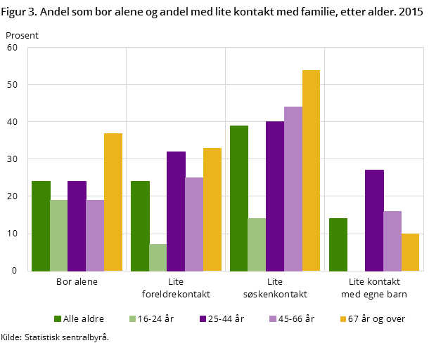
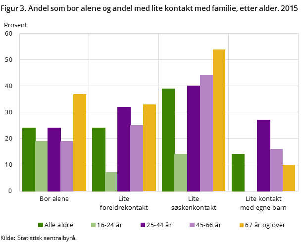

Hjem
Bakgrunn
Løsning
Egenskaper
Om Oss
Ensomhet er en mental tilstand som påvirker folk overalt i verden. Det kan resultere i at personen får psykiske problemer som depresjon og posttraumatisk stresslidelse, men det kan også være årsaken til disse problemene. I begge tilfellene kan det være vanskelig å finne en støttende person som forstår dine følelser. Å ikke ha noen å vende seg til kan gjøre til at man faller i en dypere depresjon.

Source: Wikimedia.org
Google søk, merket for ikke-kommersielt bruk.
Når personer med angst og depresjon snakker med andre, kan de ofte få reaksjonen at vedkommende er redd for å håndtere denne situasjon; de vet ikke hvordan de skal forholde seg til det. Psykisk helse er ofte romantisert når det gjelder underholdning på sosial media. Generelt i samfunent blir psykiske problemer fortsatt behandlet delvis som tabu. I flere kulturer er depresjon og angst behandlet enten som galskap eller som noe skamfullt, noe som gjør at familien kan få et dårlig rykte. I et sammfunn der angst ikke er ordentlig forstått og depresjon ikke er riktig behandlet er det derfor ønskelig å prøve og kunne hjelpe folk som har det vanskelig på grunn av problemene sine. Derfor tenker vi at vår type app vil bringe folk sammen, og normalisere for aksept og forståelse av psykisk helse.

Ved å intervjue noen familier som har medlemmer med psykiske utfordringer, depresjon og andre psykiske tilstander, fikk vi viktig feedback om hva disse menneskene går gjennom. Som eksempel, en av de familiene vi intervjuet har to små barn som har veldig vanskelig med å få kontakt med andre mennesker. Som andre barn bruker de vanlige sosial media apper som Facebook og Snapchat, men de får ikke så mye sosial interaksjon gjennom disse.
Andre personer vi intervjuet kommenterte med fakta som at sosial media er åpen for alle, og at det ikke er noen som har kontroll over alle samtalene som foregår der. Sosiale media generelt kan være vanskelig selv for mennesker uten psykiske problemer eller utfordring, og bruk av disse appene kan være enda vanskeligere for usikre og sårbare mennesker.
Ifølge personer vi har intervjuet, finnes det ikke underholdning spesielt rettet mot folk med psykiske problemer. Det er derfor ønskelig med teknologiske løsninger som kan hjelpe folk som sliter sosialt, for eksempel, til å føle seg forstått og anerkjent.
 

For eksempel, når det gjelder seksuell orientering så finnes det mange personer som har vanskelig for å godta og/eller leve med sin orientering, ofte av frykt for avvisning av venner og familie, og at det mange steder fortsatt ikke er generelt akseptert. Ifølge en undersøkelse gjennomført av the Swedish National Institute of Public Health i 2005, så er risikoen for redusert psykiske helse dobbelt så stor for homoseksuelle enn heteroseksuelle. Samme undersøkelsen viser at homoseksuelle har i mange tilfeller mindre sannsynlighet til å ha en nær venn enn resten av populasjonen. Ssamme undersøkelsen konkluderer dessuten med at personer som er tiltrukket av folk med samme kjønn har mindre kontakt med familie enn de andre.
En britiske rapport viser lignende resultater. Den konkluderer med at LGBT ("lesbian, gay, bisexual og transgender") voksne i Storbritania har dårligere psykisk helse og velvære når sammelignet med heteroseksuelle personer, spesielt yngre og eldre LGBT voksne.
Source: Flickr.com
Google search, merket for ikke-kommersielt bruk.
En annen gruppe vi har tenkt på er tenåringer som blir mobbet på skolen. I mange tilfeller er det skamfult for dem å be deres foreldre om hjelp og de får ikke nok støtte fra de som jobber på skolen. I mange tilfeller ble det verre når de ba skolen om hjelp, og ingenting ble gjort.
Vi tenker også på de vanskeligheter flyktninger må gå gjennom i de landene de flykter til. En undersøkelse gjort med 32 unge mennesker viser at 22 av dem savnet familien sin og følte seg ensomme i Norge. Disse personene må lære å leve i en veldig forskjellig kultur, lære å snakke et helt annet språk, gå gjennom en vanskelig økonomisk situasjon fordi de ikke får lov til å jobbe mens søknaden deres blir behandlet, har det vanskelig for å få utdannelsen deres godkjent og får ikke lov til å studere heller. I tillegg må de leve med forskjellige helseproblemer og i vanskelige bosituasjoner. Alt dette må tenkes på, inkludert det faktum at disse personene går gjennom posttraumatisk stresslidelser etter å ha flyktet hjemmefra på grunn av krig.
Basert på dette og mange andre eksempler og statistikk, føler vi at det trengs en platform for alle, inkludert folk med psykiske og sosiale problemer, som lar en få interaksjon med verden og få seg venner.
Fortsett HER for å lese om vår løsning.
Seksuell identitet og levekår (Engelsk): Statistisk Sentralbyrå (SSB)
Seksuell orientering og psykiske utfordringer (Engelsk): US National Library of Medicine
Psykisk helse blant mindreårige asylsøkere: Folkehelseinstituttet
Statistikk bildene ble hentet her: Statistisk Sentralbyrå (SSB)
{kind=link}